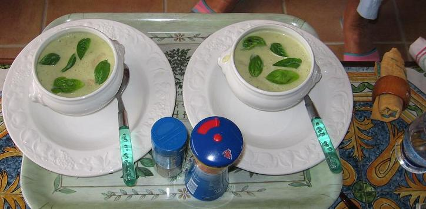

Recette n° 70 :
Soupe quiberonnaise d'asperges du Nord
Ingrédients : (pour 4 personnes)
- 1 kg d'asperges cuites en bocal (les blanches sont beaucoup
moins chères)
- 10 cl (ou 100 g) de fromage blanc, de type faisselle de
préférence 0%
- une botte de basilic frais
- 1 litre de bouillon de poule
- 3 cuillers à soupe d'huile, ou de margarine
- sel, poivre, selon goût

Préparation :
- égoutter les asperges et en réserver les pointes pour
la texture
- enlever les feuilles de basilic, en réserver quelques-unes
pour la décoration
- peler et débiter les oignons, les faire revenir dans l'huile
sans les faire brûler
- couper les asperges en tronçons de 1 cm, les ajouter aux
oignons, faire revenir 5 mn en remuant
- mettre le bouillon de poule chaud, couvrir et laisser mijoter 15 mn
- passer au mixer ou au moulin à légumes suivant qu'on
aime une texture lisse ou granuleuse
- ajouter la faisselle et bien mélanger, saler et poivrer selon
goût
- hacher les feuilles de basilic non réservées et
mélanger
- mettre les pointes d'asperges dans des petites soupières
individuelles, couvrir de la soupe, mettre les feuilles de basilic
réservées en décoration et servir sans attendre
Observations :
1 - recette
exécutée le 4 septembre 2006 à Quiberon pour 2
convives (F et JP) : nous avons mangé les 4 parts à
deux...
2- donc, bien appréciée